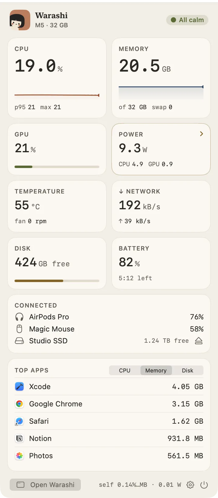

Warashi s’en tient à un seul petit élément dans la barre des menus, pour tenir même dans une barre chargée : l’esprit et un chiffre en direct. Cliquez dessus pour ouvrir la fenêtre de la barre des menus.
L’élément de la barre des menus
Choisissez le chiffre dans Réglages › Personnaliser › Toujours visible : CPU (par défaut), mémoire, GPU, puissance, température, réseau, disque ou batterie, ou Rien, juste l’esprit. Avec Signaler les problèmes activé, le chiffre bascule sur le problème avec ▲ quand la mémoire manque ou que le Mac chauffe, par exemple ▲ MÉM 29 Go, puis revient à la normale.
La fenêtre de la barre des menus
- Cliquer sur l’esprit
En haut, l’état de votre Mac en quelques mots, sa puce et sa mémoire, un bouton de curseurs pour choisir ce qui s’affiche ici, et un menu ⋯ avec Réglages, ce que Warashi utilise lui-même, et Quitter.


La fenêtre de la barre des menus, telle qu’elle est livrée. - Lire les anneaux
Le CPU et la mémoire s’affichent en anneaux au-dessus d’un graphique de la dernière minute, avec le 95e centile (p95) à côté du CPU. Survolez le graphique pour voir la valeur à n’importe quel moment.
- Utiliser les actions en un clic
Éveil garde votre Mac éveillé jusqu’à ce que vous le désactiviez : maintenez-le enfoncé pour plus de choix (Rester éveillé). Pause lance une pause tout de suite (Pauses). Vitesse ouvre Test de débit. Charge charge à 100 % pour cette fois, quand une limite de charge est active (Batterie et limite de charge).
- Appuyer sur un relevé pour aller plus loin
Puissance ouvre Flux d’énergie, Réseau ouvre Test de débit et Disque ouvre Stockage.
- Rechercher, ou ouvrir Warashi
En bas, Rechercher ouvre la fenêtre principale avec Rechercher prêt à la saisie, et Ouvrir (⌘O) ouvre la fenêtre principale. Cliquez à l’extérieur ou appuyez sur Échap pour fermer.
Ce que vous pouvez ajouter
Dans Réglages › Personnaliser › Fenêtre de la barre des menus, vous pouvez ajouter Arrêter la charge à, Rester éveillé, Pauses, Flux d’énergie, Test de débit et Appareils connectés, retirer n’importe quel élément, et le faire glisser à sa place. Voir Personnaliser.
Si quelque chose ne va pas
- Vous ne voyez pas l’esprit : il est peut-être caché derrière l’encoche. Voir Dépannage.
- Un relevé indique « indisponible » : macOS ne fournit pas ce relevé sur votre Mac. Warashi ne devine jamais une valeur.
- Charge est grisé : il ne fonctionne que lorsqu’une limite de charge est active et que la batterie n’est pas pleine.
Plus d’infos dans Dépannage, ou écrivez à adam@warashi.app.